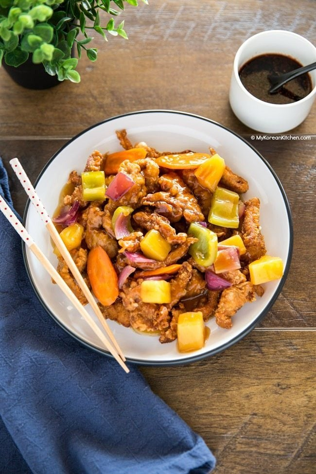

Tangsuyuk (Korean Sweet & Sour Pork)

Description
Tangsuyuk / Tang soo yook / Tang su yuk (탕수육) is a popular Korean dish presented with deep-fried pork strips and sweet and sour sauce.
It is often served as a main dish accompanying Jajangmyeon (black bean noodles) and Jjamppong (spicy seafood noodles) and is most commonly consumed communally.
Ingredients
Meat and Marinade
- 500 g / 1.1 pounds pork loin, cut into thin strips (about 1 cm x 5 cm)
- 1 Tbsp rice wine (or any cooking wine)
- 1 tsp soy sauce, regular
- 1 tsp fine sea salt
- 1/2 tsp ginger powder (or minced ginger)
- A few sprinkles ground black pepper
Batter
- 1 & 1/4 cup potato starch (or corn starch)
- 1 cup water
- 1/2 Tbsp cooking oil
- 2 egg whites
Sweet & Sour Sauce
- 200 ml water
- 200 ml pineapple juice (I used the juice from the canned pineapple)
- 1/4 cup sugar, raw
- 3 Tbsp soy sauce, regular
- 2 Tbsp apple cider vinegar
- 2 Tbsp potato starch (or corn starch)
- 2 Tbsp water
How to make Tangsuyuk
- In order to make the batter for frying, prepare a medium size bowl and add the potato starch and water. Once you have added these ingredients, use a spatula to gently flatten the starch and submerge it under water. It is important that you do not mix or whisk at this time. Instead, leave it on the kitchen bench while you prepare the other ingredients. This will allow the water and starch to separate, which will take approximately 10 to 20 minutes.
- Combine the pork with the marinade and mix them well. Set aside (in the fridge) until needed.
- Once the starch and water have been separated (from step 1), gently discard the water (the last part of the water includes a bit of starch but it’s okay to discard it). Combine the starch sediment with the cooking oil and egg whites. Mix them well until the texture is smooth (It will be stiff at first, so you might need to use a fork or equivalent tool to mix.). Set it aside.
- Add the pork (from step 2) into the batter bowl (from step 3). Mix them well. Allow the batter to rest for about 10 minutes to allow it to thicken. This will help ensure that your fried pork is very crisp.
- Fill a wok with a generous amount of oil and bring it to boil until it reaches 175 C / 350 F (or boiling). (It takes about 5 minutes.) Add the battered pork into the wok one at a time and cook the meat. (It takes about 1 to 2 minutes to cook.) Make sure the wok doesn’t get crowded. Scoop out the meat and move them onto kitchen paper to soak away the excess oil. Repeat this with the remaining meat.
- In a separate pan, pour the sweet and sour sauce into the pot. Heat the sauce on medium high heat until it bubbles up. Add the carrots into the sauce and boil for 1 minute. Add the remaining fruit and vegetables and boil the sauce a further 2 minutes. Add the thickening agent and stir constantly until the sauce thickens. Remove from the heat.
- Return to the wok. Heat the oil again until it reaches 175 C / 350 F (or boiling). Deep fry all the meat (from step 5) briefly to make it crispier. (The wok can be crowded this time.) Scoop out the meat and place it onto kitchen paper.
- Serve the meat on a plate with the sweet and sour sauce over it. Alternatively, you can serve them in a separate plate and a bowl. This will prevent the fried pork from getting soggy. (Some restaurants also serve a Korean dipping sauce for the fried meat. If you want, you can try the meat with it instead of the sweet and sour sauce.)